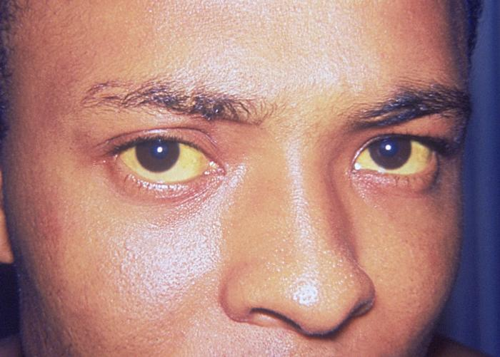
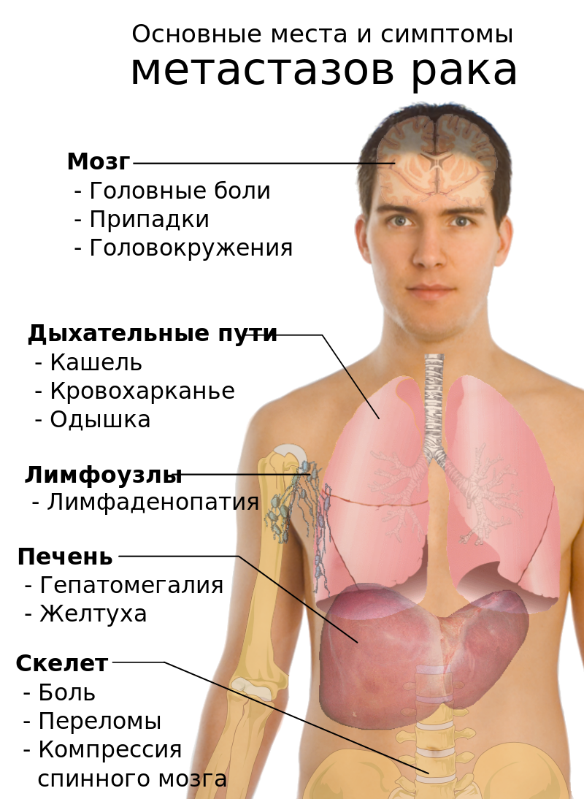

Злока́чественная опухоль
Злока́чественная о́пухоль — опухоль, свойства которой чаще всего (в отличие от свойств доброкачественной опухоли) делают её крайне опасной для жизни организма, что и дало основание называть её «злокачественной».
Злокачественная опухоль состоит из злокачественных клеток. Злокачественные эпителиальные опухоли называют раком в России, Германии и странах Прибалтики, в других странах этот термин может означать различные формы злокачественных новообразований.
Злока́чественное новообразова́ние — заболевание, характеризующееся появлением бесконтрольно делящихся клеток, способных к инвазии в прилежащие ткани и метастазированию в отдалённые органы. Болезнь связана с нарушением пролиферации и дифференцировки клеток вследствие генетических нарушений.
Содержание
Причины заболевания | Свойства | Симптомы | Профилактика
Причины заболевания
Согласно вирусо-генетической теории, при различных формах канцерогенеза причиной возникновения опухолей являются вирусы, а различные физические и химические канцерогенные факторы стимулируют реализацию их онкогенной потенции и являются патогенетическими, а не этиологическими факторами. Опухолевые вирусы не отличаются от вирусов, вызывающих инфекционные заболевания и их циркуляция в природе подчиняется закономерностям, установленным для инфекционных агентов. Современная концепция рака строится на том, что это заболевание генетического аппарата. Вирус изменяет генетический аппарат клетки, и именно эти изменения становятся критическими для развития злокачественной трансформации клеток. Начиная с 1970-х годов, были открыты гены, стимулирующие рост клеток (онкогены) и гены, подавляющие этот рост — гены-супрессоры.
Среди супрессорных генов особенно важную роль играет ген р53, который останавливает деление клетки с поврежденной ДНК и запускает механизм ликвидации повреждений. При невозможности ликвидировать повреждение ген р53 активизирует программу апоптоза и клетка погибает, угроза возникновения опухоли ликвидирована. Поврежденный ген р53 при потере способности подавлять опухолевый рост способствует возникновению таких опухолей как рак молочной железы, рак легких, рак поджелудочной железы, рак мочевого пузыря и др.
В 30 % случаев раковые заболевания сопровождаются грибковой инфекцией. Некоторые грибки выделяют канцерогены, которые повышают вероятность развития рака. Некоторые хронические заболевания также являются факторами риска развития злокачественных опухолей. 66 % мутаций, оказывающихся причиной рака, возникают сами по себе. 29 % мутаций, связанных с раком, вызваны факторами окружающей среды, а 5 % носят наследственный характер.
Свойства
- Склонность к быстрому неконтролируемому росту, носящему разрушительный характер и приводящему к сдавлению и повреждению окружающих нормальных тканей.
- Склонность к проникновению («инвазии», «инфильтрации») в окружающие ткани с формированием местных метастазов.
- Склонность к метастазированию в другие, часто весьма отдалённые от исходной опухоли ткани и органы посредством перемещения по лимфо- и кровеносным сосудам, а также имплантационно. Причём определённые типы опухолей проявляют определённое родство («тропность») к определённым тканям и органам — метастазируют в определённые места (но могут метастазировать и в другие).
- Наличие выраженного общего влияния на организм вследствие выработки опухолью токсинов, подавляющих противоопухолевый и общий иммунитет, способствующих развитию у больных общего отравления («интоксикации»), физического истощения («астении»), депрессии, исхудания вплоть до кахексии.
- Способность к ускользанию от иммунологического контроля организма при помощи специальных механизмов обмана Т-киллерных клеток.
- Наличие в опухолевых клетках значительного числа мутаций, число которых увеличивается вместе с возрастом и массой опухоли; некоторые из этих поломок необходимы для собственно канцерогенеза, некоторые необходимы для ускользания от иммунитета или для приобретения способности к метастазированию, другие же случайны и возникают вследствие пониженной устойчивости опухолевых клеток к повреждающим воздействиям.
- Незрелость («недифференцированность») или низкая по сравнению с доброкачественными опухолями степень зрелости составляющих опухоль клеток. Причём чем ниже степень зрелости клеток, тем злокачественнее опухоль, тем быстрее растёт и раньше метастазирует, но зато, как правило, тем чувствительнее к лучевой и химиотерапии.
- Наличие выраженной тканевой и/или клеточной ненормальности («атипизма»).
- Преобладание клеточного атипизма над тканевым.
- Интенсивная стимуляция роста кровеносной системы («ангиогенез») в опухоли, приводящая к её наполнению кровеносными сосудами («васкуляризации») и часто к кровоизлияниям в ткань опухоли.
- Опухолевые образования не только формируют собственную кровеносную систему, но и могут расти за счет кровеносных сосудов окружающих тканей.
Симптомы
- необычная припухлость или уплотнение (часто — наиболее ранний симптом внешнего проявления);
- кровотечение;
- воспаление;
- желтуха;
 Желтуха (лат. icterus) — желтушное окрашивание кожи и видимых слизистых оболочек, обусловленное повышенным содержанием билирубина в крови, тканях и моче.
- увеличение лимфатических узлов;
- кашель, возможно с кровью;
- увеличение печени;
- боль в костях, переломы костей;

- неврологические симптомы;
- гиперсекреция желёз (к примеру, синдром Кушинга, вызванный опухолью)
- кахексия (потеря веса, потеря аппетита, истощение);
- иммунопатологические состояния;
- гипергидроз;
- анемия
- реакцией организма на обезболивающие препараты;
- поведенческой реакцией на «страх смерти» (если пациент знает о своём состоянии);
- метастазированием в мозговую область;
- резким изменением гормонального статуса.
Симптомы варьируются в зависимости от местоположения опухоли. Боль возникает только на поздних стадиях. На ранних стадиях опухоль почти никогда не вызывает абсолютно никаких ощущений. Некоторые встречающиеся симптомы включают в себя:
Местные симптомы:
Симптомы метастазов: 
Общие симптомы
Психологическая симптоматика
Изменение психического статуса может быть вызвано несколькими факторами:
Профилактика
Цель профилактики — предупреждение заболевания и снижение частоты запущенных форм злокачественных опухолей. Её средства: проведение профилактических обследований, предотвращение контакта с канцерогенами, коррекция их метаболизма, изменение диеты и стиля жизни и/или использование соответствующих продуктов и препаратов (химиопрофилактика), снижение доз облучения.
Одним из значимых изменяемых факторов, влияющим на частоту рака лёгких, является курение. Вместе с неправильным питанием и влиянием среды курение является важным фактором риска развития злокачественных новообразований. По данным эпидемиологического исследования 2004 года, табакокурение являлось причиной смерти в одной трети из смертельных исходов, связанных со злокачественными новообразованиями, во многих из западных стран. Вероятность заболеть раком лёгких у курильщика в несколько раз выше, чем у некурящего. Кроме рака лёгких, курение увеличивает вероятность и других видов злокачественных опухолей (ротовой полости, пищевода, голосовых связок), а также других заболеваний, например эмфиземы. Кроме того, курение увеличивает вероятность возникновения злокачественных новообразований у окружающих (т. н. пассивное курение).
К другим факторам, увеличивающим частоту злокачественных опухолей, относятся: алкогольные напитки (опухоли ротовой полости, пищевода, молочной железы и другие виды злокачественных опухолей), гиподинамия (рак толстой кишки и молочной железы), избыточный вес (рак толстой кишки, молочной железы, эндометрия), облучение.В развитии онкологических заболеваний определённую роль играют вирусы. К примеру, вирус гепатита B увеличивает риск развития опухолей в печени, а в возникновении рака шейки матки важную роль играет вирус папилломы человека.
Чтобы снизить риск развития злокачественных опухолей, нужно отказаться от табакокурения и некурительных способов употребления табака, поддерживать здоровую массу тела, соблюдать здоровую диету (преимущественно растительная пища), регулярно делать физические упражнения, ограничить употребление алкоголя, практиковать безопасный секс, вакцинироваться от гепатита B и вируса папилломы человека, снизить дозу ультрафиолетового и радиоактивного облучения (мало загорать, избегать работать с радиоактивными веществами и уменьшить рентгеновские методы медицинской диагностики), избегать загрязнённого воздуха городов, избегать задымлённых помещений (приготовление пищи на дровах и тому подобное), регулярно проходить диспансеризации.